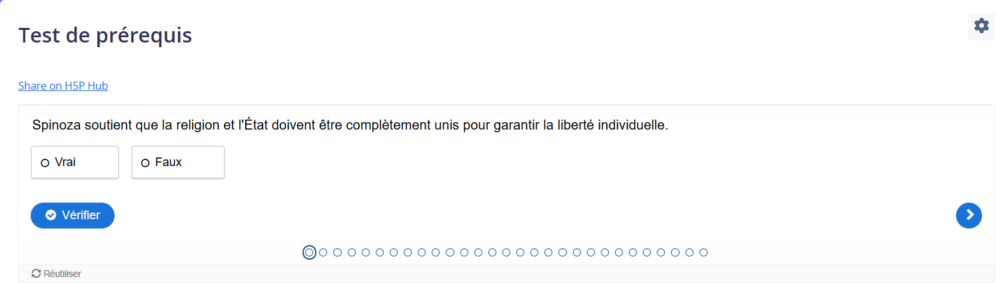
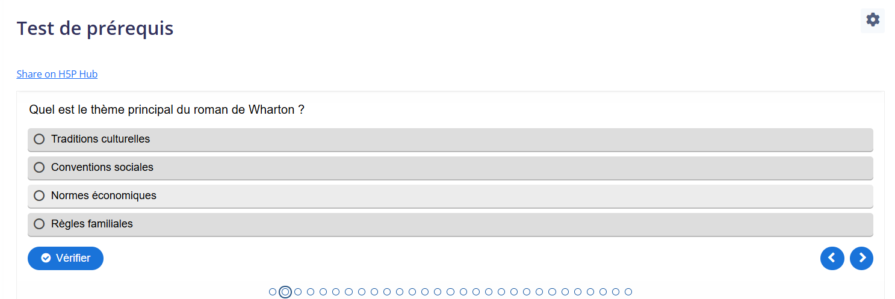
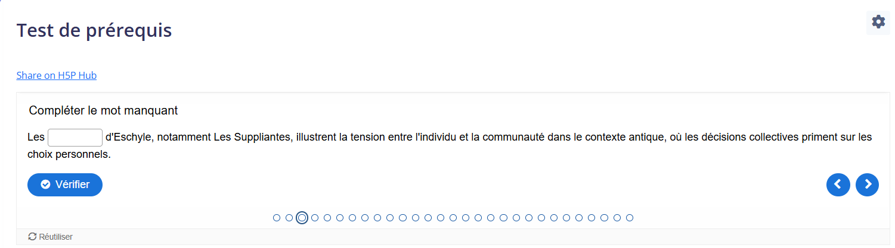

Un test de prérequis a été créé avec des questions QCM, Vrai/Faux, et mot manquant pour vérifier les acquis initiaux des étudiants.

Figure 3: Test de prérequis – Questions Vrai/Faux. Explication : Cette question encourage une réflexion rapide sur les concepts clés. Commentaire : Les questions Vrai/Faux ciblent les notions essentielles.

Figure 4: Test de prérequis – Questions QCM. Explication : Cette question teste les connaissances initiales. Commentaire : Les QCM préparent efficacement les étudiants au contenu.

Figure 5: Test de prérequis – Questions mot manquant. Explication : Les étudiants complètent une phrase avec le terme approprié. Commentaire : Ce type de question teste la mémorisation des termes fondamentaux.